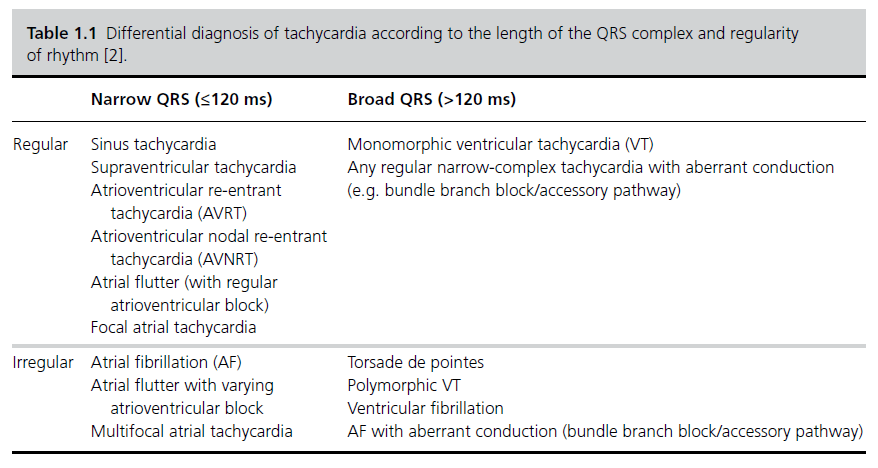
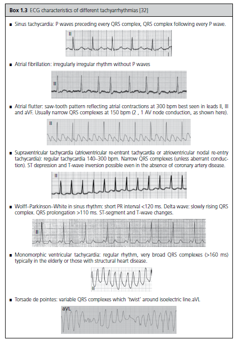

Tachycardia
Tachycardia #
Edit date: 25/06/2021 22:22
CONTENTS
- Tachycardia
- Differentiating major sub-categories
- Common or important in clinical practice
- Assessment
- Management
- Reference
Differentiating major sub-categories #
- ECG
- Length of QRS
- Regularity of rhythm

Common or important in clinical practice #
Sinus Tachycardia #
Metabolic #
- Hyperthyroid
- Electrolytes (HypoK+, HypoMg++)
- Anaemia
Infective #
- Sepsis
Structural #
- Pain
- Pregnancy
- HF
- MI
- PE
- Hypovolemia during hge
- Postural fall
Toxic #
- Alcohol / opioid / benzo withdrawal
- Cannabis use
- Clozapine
- TCAs
- Salbutamol
- Stimulants - Amphetamines
- Carbamazepine
- Caffeine use
- Cocaine intoxication
- Serotonin syndrome
- NMS
Psychological #
- Emotional/physical arousal: anxiety/panic/agitation
SVT #
Metabolic #
- Electrolyte disturbances (hypokalaemia/hyperkalemia, hypomagnesaemia)
Infective #
- None
Structural #
- IHD
- WPW
Toxic #
- Alcohol
- Cocaine
- Amphetamine
- Caffeine
AF #
Metabolic #
- Hyperthyroidism
- Electrolyte disturbance (hypokalaemia, hypomagnesaemia)
Infective #
- Sepsis
Structural #
- Older age
- Pulmonary embolism
- Heart failure
- Valvular heart disease
- Hypertension
- Chronic lung disease and lung cancer
Toxic #
- Atropine
- Alcohol
- Caffeine
- Cocaine
- Amphetamine
VT #
Metabolic #
- Electrolyte disturbances (hypokalemia/hyperkalemia, hypomagnesaemia)
- Eating disorders
Infective #
Structural #
- Myocardial infarction
- Cardiomyopathy
- Structural heart disease
- Prolonged QTc interval (congenital or acquired)
- Brugada syndrome (phenotype associated with antipsychotics)
Toxic #
- Cocaine
- Amphetamines
- Tricyclic antidepressants
- QTc prolonging medication including antipsychotics
- Digoxin
Assessment #
History taking #
Define cardiac symptoms #
- Palpitations
- Continuous v/s Paroxysmal
- Regular v/s irregular
- Other cardiac sx
- hemodynamic compromise
- chest pain
- SOB
- syncope / pre-syncope
- HF
- Orthopnea
- PND
- swollen ankles
- MI
- pain : character
- N/V
- sweating
- hemodynamic compromise
Etiologic history #
- Sepsis (Fever, rigor, presyncope/syncope, symptoms related to infective source)
- Dehydration (diarrhea, vomiting, reduced oral intake, blood loss)
- Hyperthyroidism (heat intolerance, weight loss, oligomenorrhea)
- Anxiety (parasthesia, stressors)
- Exercise
- Medication history (any new medications or dose change, particularly sympathomimetic or anticholinergic)
- Alcohol use / other substance use
- Caffeine use
Past medical and psychiatric history #
- Any cardiac disease, hypertension, diabetes, thyroid disease, chronic lung disease, anxiety, panic
- Eating disorder (purging behavior may be associated with electrolyte distrubance)
Family history #
- sudden cardiac death
Examination #
- ABCDE assessment
- Cardiovascular examination
- Focused examination if systemic illness suspected
- MSE to look for psych symptoms associated with autonomic activation e.g. anxiety, delusions, hallucinations
Investigations #
- ECG

- Bloods
- CBC (anemia, high/low neutrophil count)
- RFT (hypovolemia, hypokalaemia/hyperkalemia)
- Bone profile (hypomagnesaemia, hypocalcaemia)
- CRP (infection)
- TFT (hyperthyroidism)
- Antipsychotic levels (toxicity)
- Trop-I (if suspecting an ischemic event or myocarditis)
- D-dimer
- BNP (heart failure)
- HbA1c (diabetes mellitus)
- RBS (diabetic ketoacidosis/hyperosmolar hyperglycemic state).
- Urine
- toxicology (cocaine, amphetamines, cannabis).
- dipstick (urinary tract infection, ketonuria, glycosuria).
- CXR (cardiomegaly, pulmonary edema, pneumonia, lung cancer).
- Special Ix
- Consider echocardiogram or 24-hour tape
Management #
Sinus Tachycardia #
-
🚩 Sinus tachycardia may represent a physiological response, attempts to slow the heart rate in this context may result in hypotension
-
🚩 Red flag symptoms including persistent chest pain, syncope, hypotension, pyrexia, tachypnea or hypoxia may necessitate transfer
-
If a specific cause is identified, management should focus on treatment of the underlying condition.
-
In psychiatric inpatients, if agitation or panic is suspected but alternative diagnoses cannot initially be discounted (e.g. evolving infection), then increasing frequency of observations and clinical reviews may be indicated, even if only temporarily.
-
Clozapine induced sinus tachycardia
- Very common in the early stages of treatment
- usually benign and dose related
- If Asymptomatic patients
- And no signs of myocarditis (e.g fever or chest pain)
- Then, manage conservatively
- If Symptomatic
- Then, start rate control with Beta-blockers
- Else, start Ivabradine
- If first line rx fails
- consider p/o cardiomyopathy and seek Cardiac consult
AF #
- General principles involve offering symptomatic patients rate control (e.g. a beta-blocker) and anticoagulation if the risk of thromboembolism is high (CHA2DS2VASc score ≥2) but not outweighed by the risk of major bleeding (calculated using the HAS-BLED score).
- Anticoagulants could include warfarin or apixaban, dabigatran, rivaroxaban, endoxaban.
SVT #
- 🚩 Persistent new‐onset SVT requires immediate transfer.
- Further acute management may involve intravenous adenosine administration, synchronized cardioversion or intravenous antiarrhythmics such as diltiazem or beta‐blockers.
- Long-term management should be directed by a cardiologist. Lifestyle advice on alcohol, caffeine, and illicit drug use as potential precipitants should be offered,as well as strict control of general cardiac risk factors (e.g. smoking cessation).
Broad-complex tachycardia #
- 🚩 Any broad-complex tachycardia should be managed as VT until proven otherwise
- For psychiatric inpatients or people in the community, this is likely to require urgent transfer.
When to refer #
- 🚩 Red flags
- hemodynamic instability
- significant breathlessness
- chest pain
- syncope or near syncope
- family history of sudden cardiac death under 40
- symptoms precipitated by exercise.
- Suspected VT
- Suspected SVT
- AF with evidence of complications (e.g stroke or HF)
- Evidence of concurrent illness that necessitates admission (e.g. sepsis)
Reference #
- Pillinger T, Gaughran F, Taylor D. The Maudsley Practice Guidelines for Physical Health Conditions in Psychiatry. 2020.